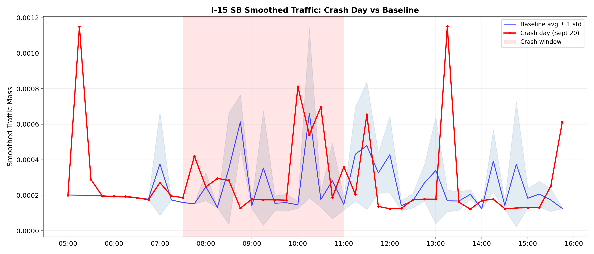
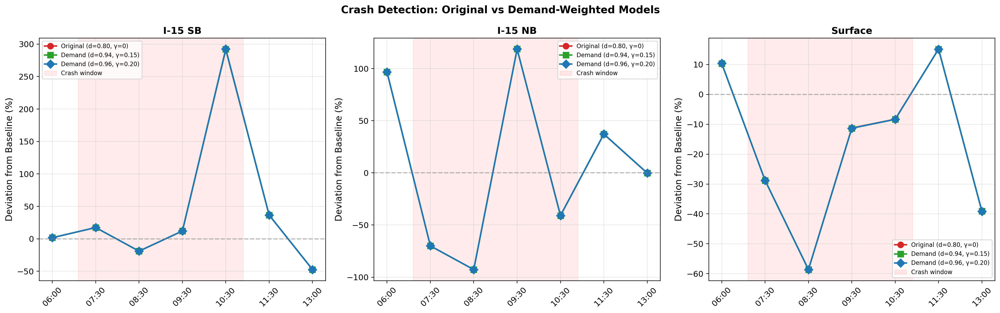
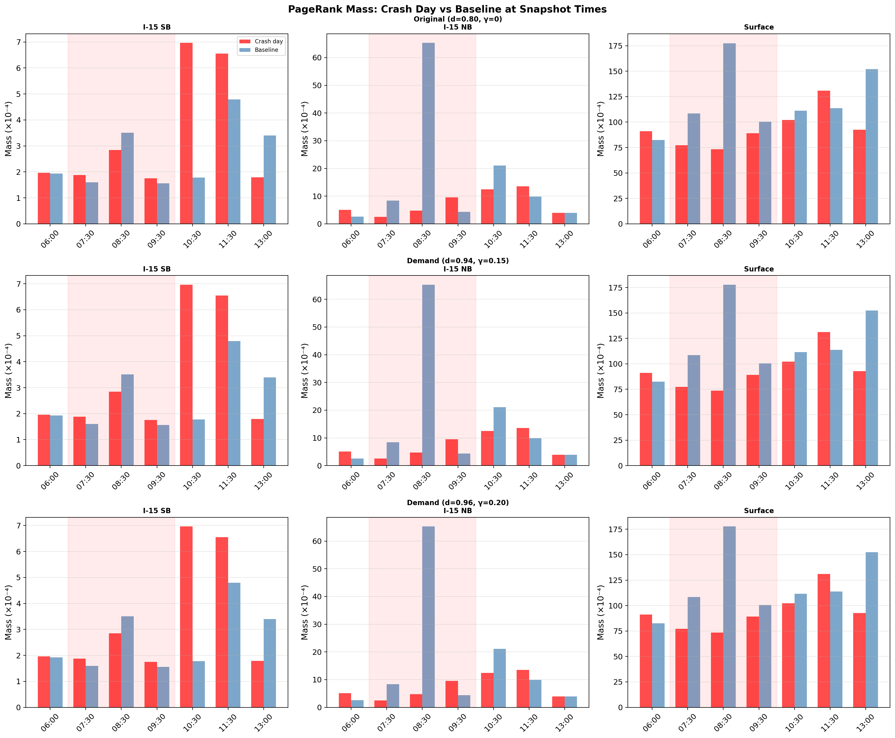
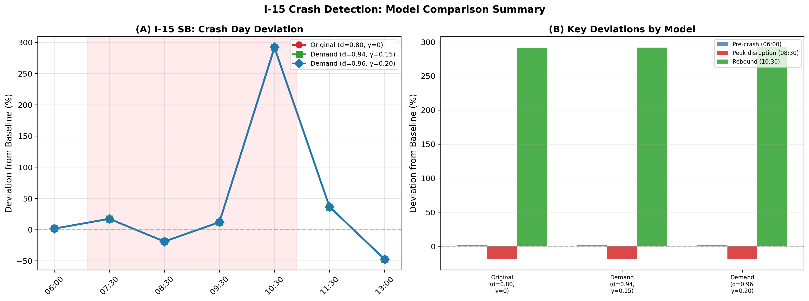

The original crash analysis used the standard model with d=0.80 (20% ground truth). This report repeats the analysis with the demand-weighted model, which embeds average traffic demand into the transition matrix:
This allows d=0.94–0.96 (only 4–6% ground truth) while maintaining low MRE. The demand prior is computed from Sept 1–15 only (the crash on Sept 20 is in the unseen test set).
| Config | Damping (d) | γ | Ground Truth | Overall MRE |
|---|---|---|---|---|
| Original | 0.80 | 0 | 20% | 0.0464 |
| Demand (balanced) | 0.94 | 0.15 | 6% | 0.0429 |
| Demand (aggressive) | 0.96 | 0.20 | 4% | 0.0385 |



| Time | Model | I-15 SB | I-15 NB | Surface |
|---|---|---|---|---|
| 06:00 | Original (d=0.80, γ=0) | +1.7% | +96.5% | +10.4% |
| 06:00 | Demand (d=0.94, γ=0.15) | +1.7% | +96.6% | +10.4% |
| 06:00 | Demand (d=0.96, γ=0.20) | +1.7% | +96.7% | +10.4% |
| 07:30 | Original (d=0.80, γ=0) | +17.4% | -70.0% | -28.8% |
| 07:30 | Demand (d=0.94, γ=0.15) | +17.4% | -70.0% | -28.8% |
| 07:30 | Demand (d=0.96, γ=0.20) | +17.4% | -70.0% | -28.8% |
| 08:30 | Original (d=0.80, γ=0) | -18.9% | -92.7% | -58.6% |
| 08:30 | Demand (d=0.94, γ=0.15) | -18.9% | -92.7% | -58.6% |
| 08:30 | Demand (d=0.96, γ=0.20) | -18.9% | -92.7% | -58.6% |
| 09:30 | Original (d=0.80, γ=0) | +12.0% | +118.6% | -11.2% |
| 09:30 | Demand (d=0.94, γ=0.15) | +12.1% | +118.7% | -11.3% |
| 09:30 | Demand (d=0.96, γ=0.20) | +12.1% | +118.7% | -11.3% |
| 10:30 | Original (d=0.80, γ=0) | +291.4% | -40.9% | -8.3% |
| 10:30 | Demand (d=0.94, γ=0.15) | +292.0% | -40.9% | -8.3% |
| 10:30 | Demand (d=0.96, γ=0.20) | +292.4% | -40.9% | -8.3% |
| 11:30 | Original (d=0.80, γ=0) | +36.7% | +37.1% | +15.2% |
| 11:30 | Demand (d=0.94, γ=0.15) | +36.6% | +37.2% | +15.2% |
| 11:30 | Demand (d=0.96, γ=0.20) | +36.6% | +37.3% | +15.2% |
| 13:00 | Original (d=0.80, γ=0) | -47.3% | -0.2% | -39.1% |
| 13:00 | Demand (d=0.94, γ=0.15) | -47.3% | -0.2% | -39.1% |
| 13:00 | Demand (d=0.96, γ=0.20) | -47.4% | -0.2% | -39.1% |

The demand-weighted model (d=0.96, γ=0.20) successfully detects the I-15 crash event using only 4% ground truth. The crash signature — disruption at 08:30 and rebound at 10:30 — is preserved across all three model configurations.
This confirms that the demand-weighted transition matrix captures enough structural traffic information to detect real-world disruptions without heavy reliance on per-timeframe GPS observations.
| Configuration | Matrix Build | PR Runs | PR Time | Per Run |
|---|---|---|---|---|
| Original (d=0.80, γ=0) | 1.01s | 28 | 0.37s | 13.1ms |
| Demand (d=0.94, γ=0.15) | 0.98s | 28 | 0.66s | 23.6ms |
| Demand (d=0.96, γ=0.20) | 0.97s | 28 | 0.66s | 23.6ms |
Backend: cupy. Total analysis time: 96.6s.